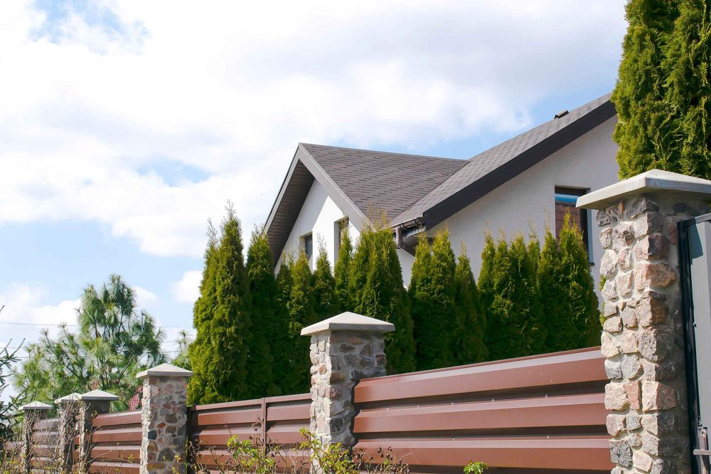
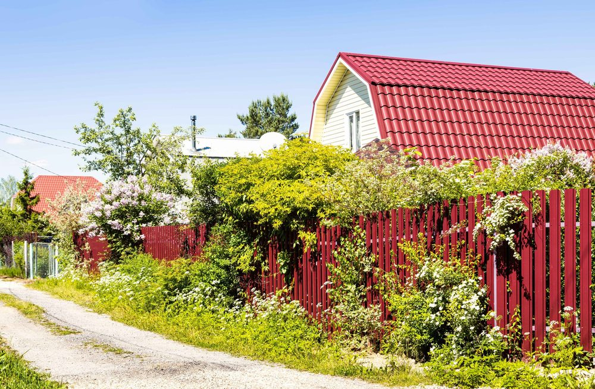

In This Guide
- White, gray, black, brown, and green cover most pairings, and each one sends a different message about the home.
- Start from the parts of your house that will never change, such as brick, stone, and the roof, then choose a fence color around them.
- Material matters: vinyl and metal come in set colors, while wood can be stained or painted.
- Sun, mildew, and neighborhood rules should shape the final pick, so test a sample before you commit.
A fence covers a lot of your property line, so its color affects how the whole home looks from the street. The right pairing makes a house look finished and intentional. The wrong one can make even a nice home look busy or dull.
This guide from Big Easy Fence walks through the color combinations homeowners choose most often for residential fences, why they work, and how to test a color before it goes up along your whole yard.
Start With What You Cannot Change
Before you look at fence samples, look at your house. Brick, stone, roof shingles, and window frames are permanent, and they set the color range your fence has to live with. Siding and trim can be repainted later, so treat them as flexible.
Pick out the undertone of the fixed parts. Red brick leans warm, gray stone leans cool, and a charcoal roof reads neutral. A fence that shares that undertone looks planned. One that fights it looks like an afterthought.
Four Palettes Homeowners Choose Most
Most fence colors fall into four families. Each gives the house a different personality.
Neutral Classics
White, gray, and beige suit nearly every home and stay in style. They frame the yard without competing with it.
Earthy Tones
Brown, taupe, and green blend with gardens and with wood or stone details. They give a warm, natural feel.
Bold Darks
Black and charcoal outline the property sharply and make plants and light siding stand out.
Accent Colors
Blues, reds, and other colors add personality. They work best on a neutral house, and in small doses.
Pairings That Work by House Color
If you already know your house color, this table gives you a starting point. Treat it as a shortlist, not a rulebook.
| House Color | Fence Colors to Try | Why It Works |
|---|---|---|
| White | White, black, or natural wood | Matching white looks crisp and traditional, and black adds strong contrast |
| Red Brick | White, black, or dark brown | White adds charm, while black or brown grounds the warm brick |
| Gray or Charcoal | Black, gray, or bronze | Tone-on-tone looks modern, and lighter grays soften a dark house |
| Beige or Tan | Brown, taupe, or sage green | Earth tones keep the whole property warm and cohesive |
| Bold or Bright | Soft neutrals or white | A quiet fence lets the house stay the main event |
Classic and Modern Combinations
Classic Looks
A white fence with a white house gives a clean, traditional look, and a white picket fence adds charm to a brick home. For a more formal property, a black metal fence against a light or dark house makes a sharp, quiet contrast.
Modern Looks
Bronze, charcoal, and warm gray siding pair well with gray or black aluminum. The mix looks sleek and highlights the shape of the house. Horizontal slats add to the contemporary feel, especially on a home with clean lines.

Bold Choices
Dark siding can carry a two-tone fence or a faux wood vinyl finish. If your house is already bright, go softer on the fence so the home stays the star. A deep red or blue fence can look great around a small garden, as long as the rest of the yard stays calm.
Choosing Color by Material
The material you pick limits the colors you can choose, so decide on it early.
- Wood. A wood fence can go natural, be stained in a range of browns, or be painted any color. Stain shows the grain, and paint hides it. Our post on choosing the best wood stain for fences goes deeper.
- Vinyl. Vinyl arrives in set colors, most often white, tan, and gray, with some faux wood finishes. If color is your main concern, see our post on how to pick the best vinyl fence color.
- Metal. A metal fence is usually black, bronze, or a dark gray. Those shades hide wear well and look good against nearly any house.

Practical Checks Before You Decide
Color is a style choice, but a few real-world factors should shape the final pick.
- Sun and heat. Strong Louisiana sun fades some finishes over time, and dark colors take on more heat. Ask how a specific finish holds up.
- Mildew and dirt. In humid weather, mildew and green film tend to show more on white and light colors. Darker fences hide dirt but show dust and pollen.
- Neighborhood rules. Homeowner associations and historic districts often restrict fence colors, so confirm what is allowed first.
- Long-term taste. Trendy colors date faster than neutrals. If you plan to sell in a few years, a neutral fence appeals to more buyers.
Look at a sample outdoors, next to your house, in morning and afternoon light. A color that looks right on a chip in a store can look very different against your brick and roof.
Finding the Right Match for Your Home
The best fence color is the one that suits your house, your yard, and the way you want the property to feel. Start from the fixed parts of the home, narrow your choice to one of the four palettes, and check it against your neighborhood rules.
If you would like a second opinion, a photo of your house and a short conversation is usually enough to narrow the field, and we can price the options you like best.
Want Help Matching a Fence to Your Home?
Send us a photo of your house and tell us the look you are after. We will suggest materials and colors that suit it and give you a clear estimate.